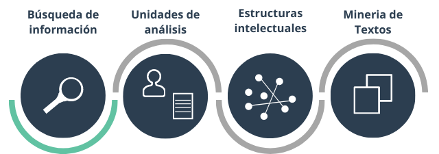

La bibliometría se puede aplicar al análisis de desempeño y al mapeo de la ciencia (van Eck y Waltman, 2014). El mapeo de la ciencia es un método bibliométrico que examina cómo las diferentes unidades de análisis (autores, artículos, revistas, instituciones, etc.) se relacionan entre si. Para este curso, adapté el flujo de trabajo de Zupic y Carter (2015), e incluí unas secciones las cuales considero esenciales.
La tarea que nos motiva es la de responder una pregunta de investigación cuya respuesta involucra sintetizar la producción científica relacionada con el tema de la pregunta. Identificar claramente la pregunta de investigación permite precisar el campo de estudio para la obtención de los datos y el tipo de técnicas bibliométricas más adecuadas para visualizar los resultados.
Las principales bases de datos bibliométricos son Web of Knowledge, Scopus y Google Scholar.
Estos son algunos criterios para la selección de la base de datos para obtener la información bibliométrica del estudio. No todos los criterios se aplican en todas las búsquedas, ya que su uso depende de la pregunta de investigación, el área de conocimiento, entre otros aspectos (Chadegani et. al., 2013).
Este paso consiste en construir la base de datos y se obtiene al aplicar la expresión de búsqueda previamente diseñada y validada. Complementario a los criterios del paso anterior, se deben aplicar algunos filtros en la búsqueda para precisar los datos a descargar. Entre los principales filtros están:
Los criterios para filtrar varían según la pregunta de investigación. La información de las bases de datos de Web of Knowledge y Scopus puede ser extraída en diferentes formatos. Se recomienda los de principal uso para su procesamiento en R que son txt, bibtext y csv.
La expresión de búsqueda diseñada en la Sección 3 precisa que los documentos obtenidos en la base de datos sean pertinentes para el tema de investigación, pero no del todo. Luego de la obtener la base de datos, se deben aplicar criterios de inclusión y exclusión, por lo general basados en la pregunta de investigación. La identificación de los documentos basada en los criterios de inclusión y exclusión se hace manualmente, pero selección de los documentos para obtener la nueva base puede obtenerse aplicando un código para filtrar los documentos de la base de datos extraída en la Sección 4.
En este ejercicio aplicaremos los pasos se las Secciones 2 a la 6 para conocer los principales temas y tendencias en investigación en el área de la eco-innovación.
Para este ejercicio utilizamos la base de datos de Scopus ya que permite replicar el ejercicio por aquellas personas que no tengan acceso a la colección principal de web of knowledge. Luego, construimos la expresión de búsqueda con base en los diferentes términos relacionados con el área de eco-innovación. Estos términos fueron identificados con base en previas revisiones de literatura y en las palabras clave de artículos científicos del área. Estos fueron los términos usados en el ejercicio de búsqueda a los cuales se les adicionó las posibles combinaciones:
| Términos de búsqueda |
|---|
| eco-innovation |
| green innovation |
| environmental innovation |
| sustainable innovation |
| sustainability oriented innovation |
| ecological innovation |
La búsqueda se llevó a cabo en junio de 2020 y el resultado inicial se filtró por las áreas de conocimiento de economía y negocios, y por artículos en inglés. Se sugiere descargar la base de datos de los documentos en los tres formatos (txt, bibtext y csv). El tamaño de la base de datos varía según la cantidad de información que se quiera de cada artículo.
| Criterio | Documentos |
|---|---|
| Resultado términos de búsqueda | 4820 |
| Limitar por áreas de conocimiento | 2275 |
| Limitar por artículos en inglés | 1640 |
| Nota: | |
| Datos de junio de 2020. |
El siguiente paso es la selección de los documentos con base en los criterios de inclusión y exclusión diseñados por el investigador. Una vez se hayan identificado los artículos para el análisis, su selección de la base se puede hacer con el siguiente código:
df <- convert2df(nombre-archivo.bib, dbsource = "isi", format = "bibtex")
t <- read.csv("titles.csv", sep = ",", header = T)
dft <- df %>% dplyr::filter(TI %in% t)Aquí se carga la base de datos que contiene los 1640 documentos (df). Luego se carga un archivo csv con los títulos de los artículos seleccionados (t), y finalmente se filtra de la base de datos los artículos seleccionados obteniendo así la nueva base de datos (dft).
En la Parte 2: Descripción de las unidades de análisis se inicia con el tratamiento de esta base de datos.